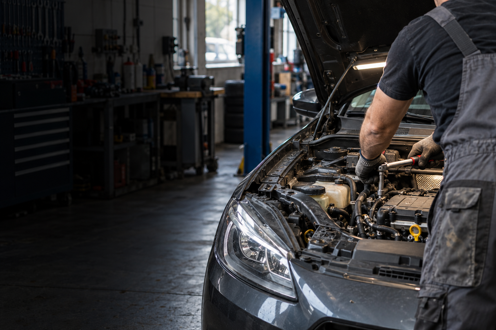

Mechanické opravy
Konkrétní rozsah a termín vždy domluvíme podle zadání.

Mechanické opravy a běžná servisní péče o osobní vozy ve Znojmě.
Konkrétní rozsah a termín vždy domluvíme podle zadání.
Konkrétní rozsah a termín vždy domluvíme podle zadání.
Konkrétní rozsah a termín vždy domluvíme podle zadání.
Konkrétní rozsah a termín vždy domluvíme podle zadání.
Mechanické opravy a běžná servisní péče o osobní vozy ve Znojmě. Nejdříve si upřesníme situaci, rozsah práce a vhodný termín. Díky tomu dostanete postup, který odpovídá vašemu konkrétnímu zadání.
Veřejný profil a zákaznické reference dokládají provoz autoservisu a mechanické opravy vozidel.
Uvedené služby a kontakty vycházejí z veřejně dostupných firemních profilů. Fotografie je ilustrační oborový vizuál.
Zavolejte nebo napište. Podle typu práce a lokality se domluví další krok.
Stačí stručně popsat situaci, místo realizace a přibližný rozsah. Pokud máte fotografie, můžete je zmínit při prvním kontaktu.
Použijte telefon nebo e-mail uvedený níže. Přesný rozsah se potvrdí individuálně.
Termín a další postup domluvíte přímo po telefonu.
Zavolat +420 777 937 533